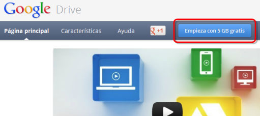
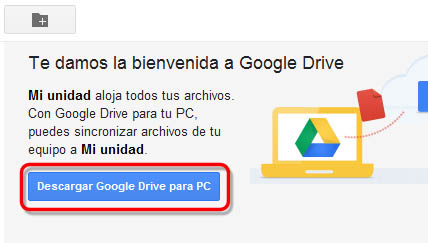
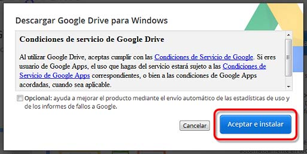
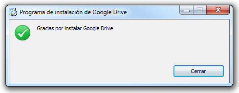
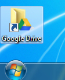
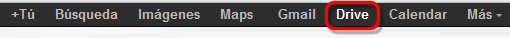

Para poder acceder a las funcionalidades de Google Drive, necesitamos aceptar los términos y condiciones de instalación.
Para comenzar a utilizar Google Drive, debemos acceder a drive.google.com. Una vez dentro, haremos clic sobre el botón “Empieza con 5GB gratis”
Para comenzar con la instalación haremos clic sobre el botón Descarga Google Drive para PC.
Se mostrará entonces una ventana que nos informa de las Condiciones de Servicio de Google. Si deseamos conocerlas de manera más concreta haremos clic sobre el enlace.
Para comenzar con la instalación solo tenemos que pulsar sobre Aceptar e instalar
La descarga de la aplicación comenzará a efectuarse y en pocos segundos aparecerá un mensaje informándonos de que la aplicación se ha instalado satisfactoriamente.

Una vez instalada la aplicación, podremos acceder a nuestros archivos de forma local, desde el acceso directo que se ha creado en el escritorio.

O bien siguiendo el enlace "Drive" que apararecerá entre los enlaces superiores de nuestra cuenta.
